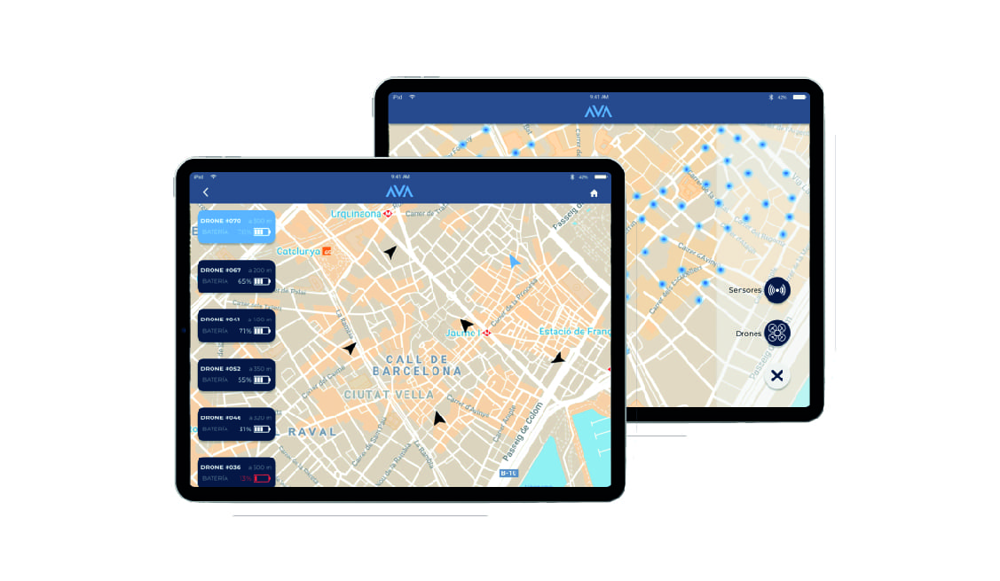
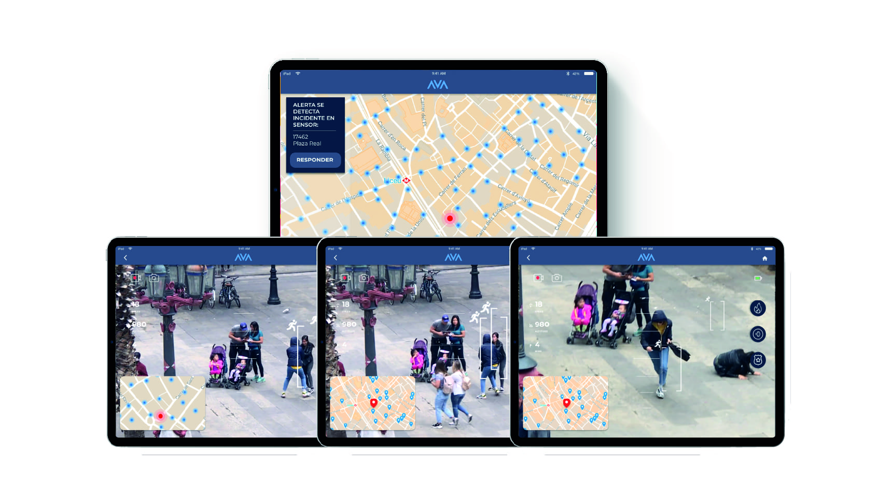

"Cada lugar donde nos sentimos seguros es un tesoro"
Proyecto desarrollado centrado en la metodología Design Thinking. La premisa se centraba en cómo se puede mejorar la seguridad pública en la ciudad de Barcelona .
ROL: UX Designer en un equipo multidisciplinario de tres personas.
CONTEXTO: Mejorando la seguridad pública con Design Thinking
HERRAMIENTAS: Figma, Principle | Miro, Whismical
MÁS INFORMACIÓN Medium article
AVA (ASISTENCIA VIGILANCIA AÉREA) ES UN SOFTWARE INTEGRAL DE VIGILANCIA URBANA QUE POR MEDIO DE SENSORES EN LAS FAROLAS Y DRONES PERMITEN UN CONTROL EFECTIVO Y AMPLIO DE LAS CALLES. GRACIAS A LA VISUALIZACIÓN A TIEMPO REAL EN LAS PANTALLAS, MEJORA DE FORMA EXPONENCIAL LA SEGURIDAD CIUDADANA.

La idea principal es crear un sistema para la policía, en este caso para la guardia urbana y para los mossos d’esquadra, este sistema funciona con unos sensores en las farolas que estarían por toda la ciudad y estos a su vez están conectados a unos drones.
Una vez un sensor detecte un hecho raro por un sistema de calor, mandaría inmediatamente una alarma a la patrulla más cercana y ya estos mandarán un dron, para ver inmediatamente el suceso.
Una vez que la patrulla ve lo que está pasando en la pantalla tiene la opción de llamar a bomberos, ambulancias o más compañeros a través de unos botones, en el caso de que el accidente fue grave y el delincuente huyera el dron, saldría detrás de él y la patrulla irá viendo en todo momento las imágenes
 MÁS INFORMACIÓN Medium article